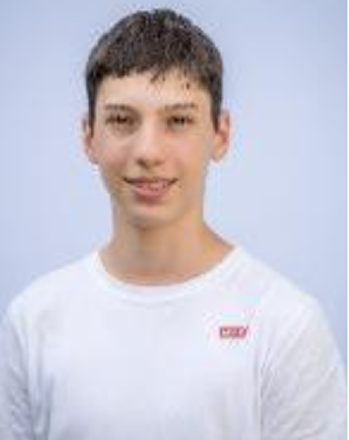

Über Mich

Auf meiner „Über mich“-Seite möchte ich mich als leidenschaftlicher Schüler vorstellen, der stets bestrebt ist, sein Wissen zu erweitern und neue Herausforderungen anzunehmen. Ich bin sehr engagiert in meinen Projekten und strebe stets nach persönlicher Weiterentwicklung. Mein Ziel ist es, mit meinen Fähigkeiten und Erfahrungen einen positiven Beitrag in der Berufswelt zu leisten.
Zurzeit bin ich 16 Jahre alt und in Ausbildung als Informatik-Lehrling (Applikationsentwicklung) bei der Bühler AG in Uzwil. Im ersten Lehrjahr konnte ich mir bereits viel neues Wissen aneignen und erste eigene Projekte umsetzen.
- Ich interessiere mich für Informatik und entwickle gerne kreative Lösungen für technische Herausforderungen.
- Derzeit Ausbildung als Applikationsentwickler mit praktischen Erfahrungen in Software- und Webentwicklung.
- In meiner Freizeit programmiere ich kleine Projekte und erkunde neue IT-Themen.
Ich freue mich darauf, meine Fähigkeiten weiterzuentwickeln und in spannenden Projekten einzusetzen.